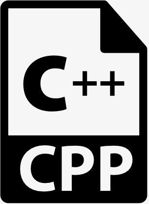

Copyright Notice: All of the following material are for non-commercial use only except that a specific permission is authorized from the author(s) or the corresponding copyright holder !!!
Jingwei Chen, Weijie Miao, Wenyuan Wu, Linhan Yang and Haonan Yuan. Secure relative detection in (forensic) database with homomorphic encryption. In: ISBRA '24, LNCS 14955, pages 410-422. Springer, Singapore, 2024.
Xiaokang Dai, Jingwei Chen, Wenyuan Wu, and Yong Feng. Lattice-based, more general anti-leakage model and its application in decentralization. In: ACISP '24, LNCS 14896, pages 44-63. Springer, Singapore, 2024.
Jingwei Chen, Yong Feng, Yang Liu and Wenyuan Wu. On the probability of generating a primitive matrix. Journal of Systems Science and Complexity, 37(4):1755-1771, 2024.
Jingwei Chen, Yong Feng, Yang Liu, Wenyuan Wu and Guanci Yang. Non-interactive privacy-preserving naive Bayes classifier using homomorphic encryption. In: SPNCE '21, pages 192-203. Springer, Cham, 2022.
冯勇, 陈经纬. 零误差计算. 中国科学: 数学, 51(1):3-16, 2021.
Yang Liu, Liyuan Huang and Jingwei Chen. Formal verification on the safety of internet of vehicles based on TPN and Z. Mathematical Problems in Engineering, 2020:6618168, 2020.
Yanan Bai, Xiaoyu Shi, Wenyuan Wu, Jingwei Chen, and Yong Feng. seIMC: A GSW-based secure and efficient integer matrix computation scheme with implementation. IEEE Access, 8(1):98383–98394, 2020.
Yong Feng, Jingwei Chen, Wenyuan Wu. The PSLQ algorithm for empirical data. Mathematics of Computation, 88(317):1479-1501, 2019.
Jingwei Chen, Damien Stehlé and Gilles Villard. Computing an LLL-reduced basis of the orthogonal lattice. In: ISSAC '18, pages 127-133. ACM, New York, 2018.
Jingwei Chen, Yong Feng, Yang Liu and Wenyuan Wu. Faster binary arithmetic operations on encrypted integers. In Y. Chen, editor, Proc. WCSE '17, Part III, pages 956-960. The Science and Engineering Institute, Rowland Heights, CA, 2017.
Jingwei Chen, Yong Feng, and Wenyuan Wu. Reducing lattice bases with Bergman exchange. In Y. Xiao and M. Ma, editors, Proc. ICCSN '17, Part II, pages 630-634. IEEE, Piscataway, 2017.
Chen Xu, Jingwei Chen, Wenyuan Wu, and Yong Feng. Homomorphically encrypted arithmetic operations over the integer ring. In F. Bao, et al., editors, Proc. ISPEC '16, LNCS 10060, pages 167-181. Springer, Cham, 2016. 
Jingwei Chen, Yong Feng, Yang Liu, Bing Tang, and Wenyuan Wu. Sparse non-negative matrix factorization with generalized Kullback-Leibler divergence. In H. Yin, et al., editors, Proc. IDEAL '16, LNCS 9937, pages 353-360. Springer, Cham, 2016.
Yong Feng, Wenyuan Wu, Jingzhong Zhang, and Jingwei Chen. Exact bivariate polynomial factorization over ℚ by approximation of roots. Journal of Systems Science and Complexity, 28(1):243-260, 2015.
Wenyuan Wu, Jingwei Chen, and Yong Feng. Sparse bivariate polynomial factorization. Science China Mathematics, 57(10):2123-2142, 2014.
Yong Feng, Jingwei Chen, and Wenyuan Wu. Two variants of HJLS-PSLQ with applications. In Proc. SNC '14, pages 88-96. ACM, New York, 2014.
Jingwei Chen, Damien Stehlé and Gilles Villard. A new view on HJLS and PSLQ: Sums and projections of lattices. In Proc. ISSAC '13, pages 149-156. ACM, New York, 2013.
Yong Feng, Jingwei Chen, and Wenyuan Wu. Incremental PSLQ with application to algebraic number reconstruction. ACM Communications in Computer Algebra, 47(3):112-113, 2013. (ISSAC '13 poster)
Xiaolin Qin, Yong Feng, Jingwei Chen, and Jingzhong Zhang. Parallel compuatation of real solving bivariate polynomial systems by zero-matching method. Applied Mathematics and Computation, 219(14):7533-7541, 2013.
Wenyuan Wu, Jingwei Chen, and Yong Feng. An efficient algorithm to factorize sparse bivariate polynomials over the rationals. ACM Communications in Computer Algebra, 46(3):125-126, 2012. (ISSAC '12 poster)
Xiaolin Qin, Yong Feng, Jingwei Chen, and Jingzhong Zhang. A complete algorithm to find exact minimal polynomial by approximations. International Journal of Computer Mathematics, 89(17):2333-2344, 2012.
Jingwei Chen, Yong Feng, Xiaolin Qin, and Jingzhong Zhang. Exact polynomial factorization by approximate high degree algebraic numbers. In Proc. SNC '09, pages 21-28. ACM, New York, 2009.
Xiaolin Qin, Yong Feng, Jingwei Chen, and Jingzhong Zhang. Finding exact minimal polynomial by approximations. In Proc. SNC '09, pages 125-131. ACM, New York, 2009.